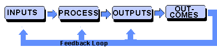

The Tao of Economic Development
James E Martin
Contents
- Systems Thinking
- Dominance - Dependence
- Diffusion Theory of Development
- Dependency Theory of Development
- Historical Digression
- Beyond Bureaucracy
- Community Development
- Basic Needs Strategies
- The State
- Conclusion
- References
Following the course of Newton and Descartes, Alfred North Whitehead laments that Newton introduced forces which "left Nature still without meaning, or value. In the essense of a material body-- in its mass, motion, and shape-- there was no reason for the law of gravitation." Hence, to Whitehead, "a dead Nature can give no reasons. All ultimate reasons are in terms of aim-at-value. A dead Nature aims at nothing. It is the essence of life that it exists for its own sake, as the intrinsic reaping of value" (Whitehead, 1934; 8,9).
Whitehead raises the notion of an "absoluteness of self-enjoyment", which is to praise the subjective end of things. From the dead Nature of Newton, he proposes the idea of 'creative advance'. By this he means the "process of eliciting into actual being factors in the universe which antecedently to that process exist only in the mode of unrealized potentialities. The process of self-creation is the transformation of the potential into the actual, and the fact of such transformation includes the immediacy of self-enjoyment" (Ibid; 26, 27)
And this is the turn we shall take here. Development - economic growth - is usually presented quantitatively: as a percentage change in the National Product, or as capital accumulation or return on investment. Similarly, it is assumed that such development is produced quantitatively from economic factors. This is the bulk of economic theory.
Development is also the spontaneous expression of society, with or without economists. An economy is not just mathematical fiction, but the coordinated effort of humanity striving towards a goal. That goal may be vague and inarticulate - as in "betterment" - or deliberate and reported - as in a war effort or space program. And it can be scrutinized qualitatively as well as quantitatively. The feverish development of weaponry, for example, is qualitatively different from the same rise in basic needs.
Life and all that we perceive derive from particular organization. It is the organization which gives us value and meaning. All things have an inside and an outside, preconditions and effects; and it is in relation to things, to other people and other living creatures, that we define ourselves. There is no individual in a Newtonian sense - no discrete atomic building block. There are only boundaries of organization.
Organization is modeled in 'loops' or in composite loops called 'systems'. Behavior is conceived as process within a structure, but this structure is also a process of another structure, ad infinitum. Being and becoming, structure and process, are defined by an intended boundary of explanation. There are countless systems owing only to the boundaries intended and the processes captured therein. Structures refer to the system's separation from its environment (our limits of explanation) which become its static quality. The processes captured enable an analysis of the system's dynamics - its functional change. All systems are, accordingly, both static and dynamic.
So let us begin to re-ravel the knots. The knots will here pertain to a social and economic organization. We must first have a notion of the individual. Let us hurriedly specify that the individual is composed of "inner personal tension", borrowing from Kurt Lewin:
Using the construct of a "system in tension" for representing psychological needs definitely presupposes a field theory. Conceptually, tension refers to the state of one's system relative to the state of surrounding systems. The essence and the purpose of this construct is to include a tendency for change in the direction of equalization of the state of neighboring systems. The construct, therefore, presupposes a geometric representation of the person and a distinction of functional subparts or "systems" within the person, with a definite position in regard to each other...... (Lewin, 1951; 11)
The hypothetical person is described also within an envrionment, and the environment is more of concern to us here. But the environment necessarily imposes meaning on the individual, and that individual (owing to his own directive) strives for such meaning. Hence, a relation attains a degree of stability-- a steady state. Lewin brings us back to Culture:
One should view the present situation - the status quo - as being maintained by certain conditions or forces. A culture - for instance, the food habits of a given group at a given time - is not a static affair but a live process like a river which moves but still keeps a recognizable form. In other words, we have to deal, in group life as in individual life, with what is known in physics as "quasi-stationary" processes. (Lewin, 1951; 173)
Here we may specify the variables in our model for economic development. These are of two kinds to represent both structure and process. The static element is represented in a variable termed 'level', 'state', or 'balance sheet,' depending on the system under investigation. A second variable, the action variable, is also termed differently according to area of study, e.g., 'rate', 'flows', 'profit and loss.' Action variables depend upon the level variables, and level variables change magnitudes through the action variables.
Through the course of social and economic understanding there have been organizational forms which stress the level variable over the rate variable, and vice versa. The first instance is typically characterized by the 'household', or any other budgetary organization including also a governing body, or non-profit organization. This is the process of a system which consumes from its environment for reproductive value: the state of stability. It should be noted that all organizations strive for some degree of stability or cohesion, but this is inevitably compromised by its need for purpose.
The purposive organization associated with surplus production for exchange is peculiar to modern rationality. It is founded historically on the concept of 'Capital Accounting' defined by Weber as "the valuation and verification of opportunities for profit and of the success of profit-making activity. It involves the valuation of the total assets of the enterprise, whether these consist in goods in kind or in money, at the beginning of a period of activity; and the comparison of this with a similar valuation of the assets still present or newly acquired, at the end of the process" (Weber, 1947; 191, 192) . By focusing on the change in levels of stocks within the organization, a sense of dynamism is introduced.
A macro-representation of the flows within a structure is the Leontief 'input-output' model. The I-O model is essentially a matrix relation of factors of production generally represented by industries or sectors. The internal flows are determined by the technical coefficients which remain fixed, assuming constant returns to scale in all sectors. The magnitude of flows is demand determined: households and government are exogenous, i.e., independent variables. A good illustration of the model is provided by A. S. FATEMI. In the United States, the Bureau of Economic Analysis (BEA) developed a method for estimating regional I-O multipliers known as RIMS (Regional Industrial Multiplier System). The BEA later released RIMS II and accompanying handbook, offering the coefficients for any region in the country for a mere $600.
Modifications have been introduced to explore the dynamics of development, as in incremental capital coefficients, etc. Isard (1976) has gone further to suggest an economic- ecologic model in which various natural elements are entered as components in the matrix. Also, from information sciences, it is theoretically possible to insert Processes into the model, i.e., I-P-O, to increase its dynamism. Finally, it is also conceivable to append Outcome to the process, thus creating a feedback loop as an additional Input to the next round of processing. This feedback loop is the information system. So, the model becomes I-P-O-Om:
 Janos Kornai, a Hungarian economist, placed emphasis on the control and the flow of information. Accordingly, he is interested not only in the real processes, such as those represented in the input-output model, but also in the "control processes" which are of intellectual nature. Within the control processes he includes "observation, information transmission, information processing, decision preparation, and decision-making" (Kornai, 1971; 39).
Within both the real and control spheres are organizations with varying degrees of superordination and subordination. The control sphere generally controls the real sphere, yet within the control sphere there are also two types of superordination and subordination: one based on the right to command and subject to legal sanctions, the other based on monopoly of indispensable information. (lbid; 77) We therefore introduce a mathematical 'partial preordering' within the set of economic organizations and weigh the relations according to level of influence. In addition to the directive functions, Kornai also recognizes the 'autonomous functions' based on the "average diligence, conditioning, routine, identification with one's job of the people working within the system' (Ibid; 178). This level of control is strictly horizontal in nature, and corresponds more closely to 'substantive rationality' in the economic process, as contrasted with 'formal rationality,' as distinguished by Weber:
The term 'formal rationality of economic action' will be used to designate the extent of quantitative calculation or accounting which is technically possible and which is actually applied. The 'substantive rationality', on the other hand, is the degree in which a given group of persons, no matter how it is delimited, is or could be adequately provided with goods by means of an economically oriented course of social action. This course of action will be interpreted in terms of a given set of ultimate values no matter what they may be. ... (Weber, 1947; 184)
Moreover, the formal expression will be dependent upon particular substantive components. Among these components, Weber mentions: 1) Market competition among relatively autonomous units; 2) Money accounting, specifically capital accounting mentioned above; and 3) production of goods in a competitive market determined on the basis of 'effective demand'. By effective demand, he means the "structure of marginal utilities in the income group which has both the inclination and the resources to purchase a given utility. This will depend upon on the distribution of wealth in a given society" (Ibid; 212).
The autonomous functions will, it is suggested, maintain only the status quo of a functioning system. They correspond to a particular 'gravity' which provides a system with its capacity to secure its existence: to survive. In Kornai's terminology, this is the 'primary adaptation'. 'Secondary adaptation' would then refer to attempts to achieve certain aspirations, expectations or norms. Secondary adaptations, then, require a higher, more formalistic function of the system.
Other models have developed to approximate the operations of an economy at varying temporal and spatial relations. One with particularly provacative impact was the Forrester model in the first Club of Rome report. This model propounded the so-called 'limits to growth' by incorporating technology, capital, population, and non-human resources within a closed system. It is illustrative of the 'global model' with a time span of approximately 200 years. The younger Forrester (1973) has developed a national model of the Canadian economy of approximately the same time span. Additional models have been introduced to specify regional interactions of shorter duration, e.g., Hamilton, et al (1969).
Economic activity follows various cyclic influences. The common 'business cycle' consists of a period of roughly 3 - 7 years, and is reflected in the interactions between backlogs, inventory and employment. The 'Kuznets' cycle reflects the rebalancing of labor and capital and consists of approximately 15 - 20 years. In the longer run, we are more interested in the interactions within the capital-producing sectors. Here, we speak of the Kondratieff cycle, or economic long wave, lasting approximately 45 to 60 years. The long wave consists of an overbuilding of capital plant, followed by a wearing out and depreciation of that plant. The end of the capital construction phase is revealed where business-cycle activity becomes more severe, unemployment rises, return on investment declines, productivity falters, new innovation diminishes, speculative activity increases, prices and interest rates rise, and economies stagnate (Forrester, 1982).
The Forrester model in World Dynamics (1971) represents the 'life cycle of economic development' lasting approximately 200 years, as indicated through shifting loop dominance. Positive feedback loops dominate the growth phase of development, while negative loops lie dormant within the structure. Accumulated growth, so the model assumes, will eventually trigger negative processes which bring the economic process from growth to steady state.
The succeeding limits are depicted as a "slow restriction of alternatives rather than by obvious trauma or collapse. Tradeoffs develop where choices were unnecessary during the growth phase" (lbid). The elder Forrester offers the following prescription: a shift in substantive values,
Impending changes in the world system threaten modern social values and goals. The industrialized societies have become geared to a philosophy of growth and rising standard of living for everyone. This cannot continue indefinitely. New human purposes must be defined to replace the quest for economic advancement. Nature must be helped rather than conquered. Civilization must be restrained rather than expanded. Social pressures probably must increase rather than decline, until those pressures can be transformed into a change in social values that take satisfaction from an equilibrium society. The underdeveloped countries face equally traumatic changes in goals. They now aspire to reach the level of industrialization of the advanced countries. But they may already be in better balance with the environment than the countries they try to emulate. (Forrester, 1971; 125)
However much we may yearn for stability, it is certain that change is inevitable. And while the 'that' is so callously posed, the 'what' has yet to be determined. To what we evolve will be determined to a great extent by the quality of 'secondary adaption' and creativity there endowed. The 'how', meaning the actual transition, may be abrupt and harsh or gradual and easy. It may also be by proclamation or understanding. In the former instance, it may be legitimized by force with war or sporadic violence as last recourse. In the latter instance, we will need new social organizations and ideas, such as provided here in an internet forum. It is with consideration to the latter course that we take up our next topic.
SOCIAL ORGANIZATION
In reviewing the literature above, certain rules of organization are common. This organization is conceived as a system of linkages-- common subparts-- through which some particular controlling order prevails. It is also mentioned that in all organizations there exists a serial relation. By 'serial' is meant a controlling relation that is "assymetrical, transitive and connexive". This relation has been described by Kornai, in terms of superordination and subordination between and within the control and real spheres of an economy.
The ordering principles of social organizations throughout history have emphasized varying degrees of vertical and horizontal control. It should be added that in no organization is there a complete absense of either dimensional linkage pattern, but linkages have differed in relative formality and attachment - meaning authority over components. We shall describe the organizations stressing the vertical linkage patterns with respect to 'dominance-dependence', and those stressing the horizontal linkage with respect to 'network' or 'community'.
The social order characteristic of our modern society has been attributed to the diffusion of 'rationality'. The autocephalous unit, as conceived by Weber, orients himself to his situation in terms of rational self-interest. Rationality, on the one hand, obliterates the reliance on custom and tradition and, on the other, places reliance on values which assume relative position through individual competition and compromise. The rational age also introduced concepts of society and individual. It was at this time that the philosophers of Europe began to question the monarchy, not certain of its replacement. The age started as a certain liberation-- as all social transitions seem-- but it stabilized within a new order of relations. It presupposed rational money accounting-- meaning effective prices determined by a competitive market. Production was determined by demand to the extent that it was 'effective' in the market. This means that it does not respond to actual social wants "unless their possessors are in a position to make them effective by sufficient purchasing power in the market" (Weber, 1947; 195)
Engels stressed the role of the modern state of producing order from the irreconcilable class conflicts, and this by essentially oppressing the ruled classes. And, with qualifications, this may be the case-- in the modern state which rationalizes its existence on the principles of Engels himself: the centrally planned socialist state. But society may be equally heteronomously determined within a laissez-faire state-- as Weber points out-- in a formally voluntary way. This is the case where unequal distribution of wealth, and especially capital goods, "forces the low-income group to comply with the authority of others in order to obtain any return at all for the utilities they can offer on the market" (Ibid; 213) This, says Weber, is the fate of the entire working class. In the 'formal rationality' that Weber gives to us, this is the most economic thing to do:
The expropriation of workers in general from possession of the means of production depends on the following principal economic factors: (a) The fact that, other things being equal, it is generally possible to achieve a higher level of technical efficiency if the management has extensive control over the selection and the modes of use of workers, as compared with the situation created by the appropriation of jobs or the existence of rights to participate in management. These latter conditions produce technically, as well as economically, irrational obstacles to efficiency. ...; (b) in a market economy a management which is not hampered by any established rights of the workers, and which enjoys unrestricted control over the goods and equipment which underlie its borrowings, is in a superior credit position. (c) from a historical point of view, the expropriation of labour has developed since the sixteenth century in an economy characterized by a progressive development of the market system, both extensively and intensively, by the sheer technical superiority and actual indispensability of a type of autocratic management oriented to the particular market situations, and by the structure of power relationships in the society. ... (Weber, 1947; 246, 247)
Weber gives as his final justification that "free labour and the complete appropriation of the means of production create the most favourable conditions for discipline" (Ibid; 248). But 'formal rationality' is only one of a duality that he defines. 'Substantive rationality'-- the ultimate values which legitimize the economic-- has often disagreed.
Weber then goes on to state the stages of this rationality - meaning toward capitalism:
There are the following stages in the development toward capitalism: (a) Effectual monopolization of money capital by entrepreneurs who have used it as a means to make advances to labour. ... ; (b) apropriation of the right of marketing products on the basis of previous monopolization of knowledge of the market and hence of market opportunities and monopolization of money capital. ...; (c) the subjective disciplining of workers who stood in a dependent relationship in the puting-out system, and the supply of raw materials and apparatus by the entreprenuer. ... ; (d) the development of work shops without a rational specialization of labour in the proces of production, by means of the appropriation by the entrepreneur of all the non-human means of production. ...; (e) the final step in the transition to capitalistic organization of production is the mechanization of the productive process and of transportation and its orientation to capital accounting. All the non-human means of production become fixed or working capital; all the workers become 'hands'. As a result of the transformation of enterprises into associations of security owners, even the management itself becomes expropriated and assumes the formal status of an official. Even the owner becomes effectively an agent for, or unofficial representative of, the suppliers of credit, the banks. (Weber, 1947; 258, 259)
The organizational manifestation of this rationality is the bureaucracy-- a dendritic pattern of vertical control. This is the process of centralization which, according to Weber, is "the most rational known means of carrying out imperative control over human beings" (Ibid; 337) . The spatial manifestation is the industrial-complex -- the process of concentration which owes itself to the formalistic conceptions of scale and agglomeration. It is the spatial manifestation that shall occupy our minds presently. We will consider the organization in turn.
THE DIFFUSION THEORY OF DEVELOPMENT
The traditional theory of development equated development with modernization, with developed- or modern-state refering to the accumulation of capital in concentrated productive stock structured toward the industrial process and exchange economy. The benefits of such concentration are to 'trickle-down' and influence the entire social system. The traditional systems would lose their power as the modernizing processes assmilated more and more of the resident populations: differentiating social activities, specializing economic functions, and offering contractual dominate - subordinate relations. The term 'diffusion', also 'from-above' has been applied to this dissemination of development. It was based on twin assumptions of the system's benevolence and stability. It was considered to be both orderly and evolutionary.
There were many terms used in describing the processes expected, most having synonomous implications. Hirschman (1958) suggested that key sectors be chosen for investment which had the most value on the basis of 'backward- and 'forward-linkages' within the input-output model. This form of concentrated investment would allow the greatest return for public capital and managerial skills. Private capital was then invited to balance the input-output matrix, seizing on external economies and market demand. Furthering the concept of concentrated investment, the growth-pole concept-- which envisioned a 'spatial diffusion' of economic growth-- was introduced. There would be a 'filtering' of innovations down the urban hierarchy, as well as a 'spreading' of economic benefits from urban center to hinterland areas (Berry, 1972).
The economic cores are central to a 'nested hierarchy of spatial systems' (Hansen, 1981). Through communication and transportation, political administration and market monopolization, the dominance of the center over the periphery was cumulative. Within the formal rationality, it appeared the only way of articulating the development process and integrating the periphery into the market economy. Outside this formal rationality, we might expect some dissension which came from the sociological perspective.
DEPENDENCY THEORY OF DEVELOPMENT
The other side of the top-down-diffusionist model is the dependency model in which development is seen as an essentially disruptive process which destroys traditional social organizations and assimilates the disorganized populations on unequal terms. Peripheral areas are seen as subordinated to the foreign metropolis, production becomes directed soley to an exchange market established in core areas with little or no regard for local self-interests or direction.
The diffusion of development envisioned for the peripheral areas provided both 'linkages' and 'leakages' to the external markets. Linkages refered to the downward transmission of consumer goods and services, not facilities for production. Production in the industrial mode requires a degree of scale both in managerial and capital factors. It also requires certain agglomerative economies for suppliers and markets. Leakages refered to reduced multiplier effects of decentralized investment whereby most of the full effect was displaced back to the center markets.
The national economy as measured in the formalistic economic methods refers to those sectors that are assimilated into the world exchange medium. In the poor agrarian societies this is an 'enclave' economy at best. With the expansion of the exchange market was the disruption of the traditional economy of rural industry and crafts and the dislocation of its productive elements. These elements were basically left to join the structurally underemployed in the metropolis. Taking the dependency theory to its conclusion, regional development should secure a dual process of selective closure to the exchange market coupled with the development of a use-valued economy which satisfies territorial objectives with its own resources. Most territorial objectives concern the provision of basic needs-- e.g., nutrition, health care, education, shelter, etc. The resultant linkages and leakages then consist of activity impulses from below which feed into the market economy and may influence also the price-signals - hence, development - of the greater economy.
Development would need to be considered again as an integral process of widening opportunities for individuals, social groups, and territorially organized communities at small and intermediate scale, and mobilizing the full range of their capabilities and resources for the common benefit in social, economic, and political terms. This means a clear departure from the primarily economic concept of development held in the 1950s and 1960s with its ensuing presssure on individuals, social groups, and territorially organized communities to develop only a narrow segment of their own capabilities and resources as determined 'from above' by the world system .... (Stohr in Stohr and Taylor, 1981; 39, 40)
When we begin to discuss use-valued organizations and territorial mobilization, the economic literature becomes clumsy. Here the research becomes eclectic, borrowing from the other social sciences of anthropology and sociology. It is here, also, that we must take leave from the 'dominance-dependency' dualism, and enter the realm of horizontal organizations.
As stated previously, we assume that all organizations are structured vertically. Compatriots of the 'bureau'-- economists, academicians, technicians-- have stressed the vertical attachments, and perhaps neglected the horizontal perspective. The development that ensues from the bureau's directive is an extension of its rationality into its environment. The logic of planning, the compartmentalized operations and the evaluative criteria are gradually regarded as inherent to the system so studied.
The bureau may also express the horizontal self-organizing impulses, but only to the extent that the dependency theorists have exaggerated its disruptive effects. Some of these impulses are strictly stimuli-responsive. Some are not so strict, reflecting more a self- defining process. In the former case, the vertical linkages would serve as input channels to the internal process, in the latter case, they would serve as output channels.
To fully consider this proposition, we will view the substantive values of human societies in light of the emerging formal rationality. We will look at an historical account, using whatever values facilitated the empirical economy to reflect a substantive order. This follows from the interpretation of Karl Polanyi:
The fount of the substantive concept is the empirical economy. It can be briefly (if not engagingly) defined as an instituted process of interaction between man and his environment, which results in a continuous supply of want satisfying material means .... The instituting of the economic process vests that process with unity and stability .... The human economy then, is embedded and enmeshed in institutions, economic and noneconomic. The inclusion of the noneconomic is vital. For religion and government may be as important for the structuring of the economy as monetary institutions or the availability of tools and machines themselves .... (Polanyi, 1957)
We find in the beginning of human community, persons gathering in clans or tribes. There was power ordering even at this elementary level, yet there were often narrow thresholds in which power and wealth could be accumulated. Lewis Haney (1936) mentions a "tendency to regard trade and the crafts with disfavor" among the early Indians as well as the early Hebrew. And the Greeks distinguished between economics (oikonomik), refering to economics in consumption (i.e., the household), and chrematistics (chrematistik), refering to "wealth getting" activities including exchange. Chrematistics was again analyzed in terms of the 'natural' and the 'unnatural'. Natural meant simple barter for one's wants; unnatural meant retail trade for the sake of money-making.
In the case of India, social development was conceived as the outward extension of personal development. The concept of 'dharma', meaning litterally 'to hold together', formed the root of social relations. Three centuries before the western modern epoch we see an advanced economic system:
As early as 322 BC Kautilya, the greatest economist and sociologist of the age, advocated a balanced economy, through regulating prices, standardising quality produce, nationalising mines and capital resources, harmonising relationships between ethnic and caste groups, safeguarding the interest of the wage-earners, utilising the irrigation and man power potentials and above all recognition of the services of individuals taking up community works. For the first time it ushered in a new era of collective enterprises in the rural sector for encouraging joint farming, joint management of irrigation, pasture land, educational and recreational activities. In the subsequent age, too, Asoka, the Piyadarsi, endeavoured to build up social integration by undermining the solidarity of the sacredotal Brahmanical class, and, exposing the hollowness of their complicated rituals. Earnestly he devoted himself to replacing the sacredotal cult with universally accepted values, like service to mother and father, teacher (guru), learned (Brahmana), cordial behaviour with one's asociates and respect and love for all creeds and creatures. These values he called 'Law of Piety', which he inscribed on rocks at all corners of his far flung empire in the regional script (Brahmi and Kharosti) and in the language of the elite-few. Needless to stress, the voice of humanity left by Asoka as permanent records in the lingua-franca of the country, was a positive step taken by him to bring into practice social reality and social justice among the down-trodden people by upgrading their morals and ethical values. (Sengupta, 1976; 13)
'Bharahatvarsa', a concept of social interaction, evolved at this time in the Indo-Aryan culture. This was a process of social development, with cooperation being the highest form. Development progressed, by this concept, from the simple gathering of individuals who initially communicate, conflict and compete within the grouping; then they accomodate, assimilate and cooperate. The process to cooperation is not inevitable, nor strictly inherent in social groupings, but must be striven for within each person's development.
Integration of communities, is not a matter of chance or accident. Nor, is it something given as dole. It is always sought for, and cultivated by the individuals, who form the group, community and the society. Good individuals are, therefore, the pre-requisite of a good society. Also good individuals should have good life. Charaska, the court physician of Kanishka (AD 2nd century) says that the life of that man is good who is well wisher of all creatures, who does not covet other people's goods; who is a teller of truth; who is peace-loving; who acts with deliberation, is not negligent, and so on. In ancient India the social institutions were the workshops for the output of good individuals. Greater importance was given to 'mind' for aesthetic development and ethical perfection than to life and body. The primary objective was the extension of the dimensions of the individuall's personality through moral, aesthetic and religious development for setting up common human values - beauty, truth, and goodness - for the peaceful existence of human race. ... (Ibid, 25, 26)
The guild organization existed in Indian society, known as the Sreni. As early as the fourth century B.C., Panini the Grammarian refered to the Sreni as an association of adults knowing a common trade and craft. As in the European instance, this organization was not restricted to economic pursuits but was extended to humanitarian works-- the construction of the house of assembly, temple, garden, etc. For the purposes of technical coordination, a Karya- chintakah (literally, one who thinks and plans) was appointed to oversee its operations. Only 'virtuous' men dedicated to Dharma-- "devoid of avarice and a well-wisher of the group" were appointed to this position. The policies of the Sreni resemble what we would call the cooperative organization: 1) Benefits were shared in proportion to the use made of the organization; 2) Capital return was limited. Much of its income was invested in communal works; 3) Appointed officials (Karyachintakahs) were given tenure and security but no organizational control. Their authority was subject to review, and; 4) Members controlled the Sreni organization not because they contributed capital but because they participated in its activities (Ibid, 46)
The Indian nation achieved a remarkable degree of integration considering the cultural diversity and geographic expanse. This was done by a federation of 'village republics'. Such republics were remarkable also for the degree of democracy and local government. Their disruption coincided with the advent of the East India Company and the centralization of all executive and judicial powers in the British Bureaucracy (Narayan, 1977). Since the British withdrawal, India has attempted re-instituting the village network.
In the European clan, or gentes, we find no indication of personal inheritance of property. Social bonds were rooted in consideration for the ancestors, which prompted the burial of personal wealth with the entombed. As the village community evolved, property was transferable within family lines, but as yet this was considered only as regards movable property: cattle, implements, arms and dwelling-house. Land-- the basis of subsistence and culture-- was still held in common and distributed by representation at the folkmote (or assembly), principally on the basis of need. The early Germanic village communities were virtually self-sufficient groups of households: democratically organized and of similar wealth. Exchange for gain was not tolerated within the community., and its economy was directed by earnest interpretations of the Christian doctrine. The economic relations systematically introduced notions of cosmopolitan brotherhood, condemnation of slavery, natural community of property, dignity of labor and charity. (Haney, 1936; 94,95) Eventually, the notion of inheritance began to change things:
Under whatever systems of inheritance the chances of family life would bring about changes in the relation of property in land to labour available to work it, so that some families would find themselves with more land than they could cultivate and some with less. Moreover, differences of temperament come in. Some men are industrious and acquisitive, others feckless, idle or generous. There is a certain tendency to check accumulation. The richer family marries its children earlier, so that numbers increase faster and land per head is reduced in the third generation. But this tendency has generally proved too weak to offset the forces pressing against equality. In a society which allows inequality of possessions between families, it perpetuates itself. Those with excess land can make use of the labour of others, either by employing them at wages or letting land to them for a share of the produce. Either way, property becomes a source of income independently of its owner's work. (Robinson, 1970; 41)
Originally (the story goes) there was strict equality among members in the village system; but with inheritance, land per person would fluctuate. Soon certain members would be divorced from their inheritance-- there simply would not be enough cultivatable land. Others would have more land than they could farm. They, by letting land out to those expelled, became lords. Others were forced to find new sources of income: a new class arose within the peasantry: the hirelings or cottagers.
The lord was often represented by an official within the village system, but the village nonetheless maintained its own jurisdiction. We are told that "in all matters concerning the community's domain, the folkmote retained its supremacy and often claimed submission from the lord himself in land tenure matters" (Kropotkin, 1904; 164) . In Europe, towards the ninth and tenth centuries with the invasions of the Normans, Arabs and the Ugrians, the villages constructed walls which, they realized, could resist the encroachments of the lords as well as the invading foreigners.
The whole process of liberation progressed by a series of imperceptible acts of devotion to the common cause, accomplished by men who came out of the mases-- by unknown heroes whose very names have not been preserved by history. The wonderful movement of the God's peace (treuga Dei) by which the popular mases endeavoured to put a limit to the endless family fueds of the noble families, was born in the young towns, the bishops and the citizens trying to extend to the nobles the peace they had established within their own town walls. ... (Kropotkin, 1904; 167)
Arriving at about this period (twelth and thirteenth century) was the 'guild'-- the union, or 'brotherhood' within a craft. The city emerged from the simple federation of such village communities and guilds. Materials were purchased, and products marketed in common. Manual labor had no connotation of mentality or inferiority but was embodied in a sense of "justice" to the community, of "right" towards both producer and consumer.
Although the villages had successfully resisted the intrusions of fuedal lords, they had not extended their freedom to rural subjects. The lords were invited into the villages to live as equals: this the lords did not do -- but developed divisions within the cities and surrounding villages. "Drawing large incomes from the estates they had still retained, they surrounded themselves with numerous clients and feudalized the customs and habits of the city itself" (Kropotkin, 218) .
To enhance the consumption of these lords, more was demanded of the peasantry, and cities were structured toward exchange. The city then took a life of its own: 'Political Arithematic' was introduced; the unit of analysis shifted from manor to state; the criteria became money, the method -- competition. The rural peasantry even assisted the process of state-building.
The peasants supported the Paris mob who were the spearhead of the French Revolution in smashing the aristocracy, destroying feudal priviledge and breaking up the estates of the nobility and the church into small freeholds. Beyond that they had no use for radical ideas. Liberty, Equality and Fraternity ended up as the charter for private property. (Robinson, 1970; 58)
Through a process of enclosures the peasantry were expelled from their land and from their culture and livelihood. And for no better option, they moved to the city to form a source of cheap labor. The argument is advanced that they should be given their livelihood: that now being capital. In some societies, where substantive values have accomodated the formal, this is not interesting. On the margin of adjustment, however, these considerations are broadened. Ivan Illich (1981), who writes for this threshold, suggests a vernacular domain:
The tension and balance between vernacular work and industrial labor -- paid and unpaid -- is the key issue on the third dimension of options, distinct from political right and left and from technical soft and hard. Industrial labor, paid and otherwise exacted, will not disappear. But when development, wage labor and its shadow encroach upon vernacular work the relative priority of one or the other constitutes the issue. We are free to choose between hierarchically managed standardized work that may be paid or unpaid, self-selected or imposed on the one hand and, on the other, we can protect our freedom to choose ever new invented forms of simple, integrated subsistence actions which have an outcome that is unpredictable to the bureaucrat, unmanagable by hierarchies and oriented to the values shared within a specific community. (Illich, 1981; 24)
Illich (1980) tells of a French essay, dated 1777, which demonstrates the European ambivalence toward the new order. While forced labor was considered a punishment for sin or crime in France, the Dutch Calvinists or North German workhouses were established to transform "useless beggars into useful worvers". (Illich, 1980; 5). The destitute still resisted such efforts to qualify them for work, and the community was prone to shelter and hide them. The Prussian Secretary of the Interior, 1747, recounts:
... from morning till night, we try to have this [poverty-] police cruise through our streets to stop beggary ... but as soon as soldiers, commoners or the crowd notice the arrest of a beggar to bring him to the poor house, they riot, beat-up our officers sometimes hurting them grieviously and liberate the beggar. It has become almost impossible to get the poverty-police to take to the street...." (Ibid, 5)
Under the Mercantilists, the spirit of nationalism developed into forms of economic warfare and frugality. Price was determined by exchange, no longer by the substance of an item or by the village on need basis. With the new order ensued the loss of community and the accrual of the individual. As individuals grew to accept their obligations to the state, they similtaneously subdued the same to each other. To replace the concept of social obligations, the "welfare state' was suggested and has been implemented to varying degrees of seriousness and success. Such obligations now transpire within its bureaucratic frameworlk.
The modern state is a function of external as well as internal forces. It is not always in balance, as the Mercantilists suggested. An equilibrium may be gained within the international arena, with one or more states in continuous disequilibrium. As international market competition becomes more intense, the bureaucratic state is invited to take a more active role in structuring sectoral development. This implies a degree of regional emphasis which favors the industrial growth-core regions over the agricultural subsistence-peripheral ones. Within the core areas there are competing groups, establishing 'center coalitions' of capitalists vying for state power. Lunday (l98l) refers to these as political struggles for 'state hegemony'.
Where interest is in alleviating rural poverty structures, awareness should be directed toward rural interests in maintain¬ ing them. Das Gupta suggests a modeling of partisanship through ‘relative political weights'. Unlike the Engelian conception of state as suppressing class struggles, he assumes that "the logic of conducting power requires that a political ordering of interests and a sequencing of their realization be worked out" (Das Gupta, 1981; 4). Specifically of rural impoverishment, he comments:
Consider cases where such ordering is easy because the dominant interests are highly congruent. Take the case of those poor countrires where mass poverty needs urgent attention. Most of the poor people in these countries are located in rural areas. The rural economy in poor countries based on a mixed economy is clearly dominated by higher landed interests. Depending on the degree of industrialization, the industrial part of the economy is dominated by a different set of interests. It is not difficult to see why landed interests, who in a large part have been instrumental in generating poverty, would have a political interest in maintaining rural poverty. Leading industrial groups may not feel so strongly about maintaining rural poverty, although the logic of cheap food supply and cheap labour supply may bring them politically closer to the rural landed groups. The peasant groups, however, have the advantage of numbers-- but this advantage is nullified to the extent they remain unorganized or unrepresented. Political authority in such situations would naturally reflect this balance of revealed interests. How then will the case for poverty reduction ever get a fair trial? (Das Gupta, 1981; 4)
Labor also formed its political coalitions and learned the skills of weilding power. Marxism emerged with capitalism in the industrial stage, and into the same vertical rationality. It is possible, however, for several dimensions to comprise an economic order. As in the Greek oikonomik and chrematistik, there remains distinct dimensions within an economic system. Remnants of both village and feudal economic systems remain. Marxism conflicts with capitalism for the same reason that others are assimilated: boundary delineation.
Vertical structure can be observed within any rational organization: eg., a corporate chart. Hierarchy, a chain of command with successive superior-subordinate relationships, is almost always present. There may be many different levels within a hierarchy; each level represents a 'sub-hierarchy. The system is often represented as 'triangular' with top, middle and lower levels. The apex top is pre-occupied with strategy and the lower base, operation. Information flows along the lines of the hierarchy. The heaviest flows are upward and this information is aggregated as it flows upward from each to the next level, but information flows down the chain of command as well. Each level is a filter as well as generator of information for subsequent levels.
von Bertallanfy, a biologist and systems theorist, has introduced the notion of 'equifinality', meaning 'self-limiting growth'. Equifinality can specify optimum size of any organization based on the generalization that "as the growth of any particular structure proceeds, in the absense of any change in the structure itself, volumes will grow eight times as fast and areas will grow four times as fast as linear dimensions" (Boulding, 1972; 87). In social organizations, the limiting factor is communication-- particularly up and down the hierarchy-- which grows at a slower rate than the organization. The organization eventually will limit its growth by the simple difficulty in getting information from its environment to the decision-makers. In the large bureaucracy, those decision-matlers "have to make decisions in the light of increasingly less realistic images of the world" ( Ibid)
Jay Forrester speaks of the "stultifying effect of the authoritarian organization on initiative and innovation", specifying that "the authoritarian and bureaucratic control structure molds individual personality so that the environment is seen as capricious, and lacking orderly structure and in cause-and-effect relationships (Forrester in Jantsch, 1968; 426). As a consequence the individual is not inclined to question the existing structure, and is not open to information that might improve it.
The 'decentralized divisional' form developed by General Motors was one answer to the problems incurred through diseconomies of scale. The 'project management' form is a further decentralization within the organization. A final adaptation is the ‘profit center' concept which Forrester takes to its conclusion to the point of the individual or temporal associations of project 'teams':
If resources are allocated not by the edict of higher authority but according to the value of the resource to the individual members of the organization, there must be a basis on which each memeber can estimate that value. ...each man or small team (partnership) should be a profit center and a decision point responsible for the success of those activities in which the center chooses to engage. (Forrester in Jantsch, 1968; 429)
Alvin Toffler (1981) suggests a 'Third Wave’ organization will replace those more centralized.
Earlier we saw that when all the Second Wave principles were put to work in a single organization the result was a classical industrial bureaucracy: a giant, hierarchical, permanent, top-down, mechanistic organization, well designed for making repetitive products or repetitive decisions in a comparatively stable industrial environment.
Now, however, as we shift to the new principles and begin to apply them together, we are necessarily led to wholly new kinds of organizations for the future. These Third Wave organizations have flatter hierarchies. They are less top-heavy. They consist of small components linked together in temporary configurations. Each of these components has its own relationships with the outside world, its own foreign policy, so to speak, which it maintains without having to go through the center. These organizations operate more and more around the clock.
But they are different from bureaucracies in another fundamental respect. They are what might be called "dual" or “poly” organizations, capable of assuming two or more distinct structural shapes as conditions warrant ....
We do not as yet have a vocabulary for describing these organizations of the future. Terms like matrix or ad hoc are inadequate. Various theorists have suggested different words. Advertising man Lester Wunderman has said, "Ensemble groups, acting as intellectual commandos, will ... begin to replace the hierarchical structure." Tony Judge, one of our most brilliant organization theorists, has written extensively about the "network" character of these emerging organizations of the future, pointing out, among other things, that "the network is not "coordinated by anybody; the participating bodies coordinate themselves so that one may speak of 'autocoordination'." Elsewhere he has described them in terms of Buckminster Fuller's "transegrity" principles. (Toffler, 1981; 263, 264)
For the profit center concept to arrive at the individual or team level, new integrative linkages would be implemented. Information would be accessible through 'networks' to any team activity, rather than restricted as in the usual bureaucratic organization. Networks, realistically, would not replace the hierarchical chain of command, but would organize horizontally within levels. The hierarchy would then integrate between levels constituting a vertical system. This new design would require new methodology. For accounting, Forrester employs the marginal return concept:
The non-authoritarian structure implies internal competition for resource allocation. Prices of individual skills, capital, and facilities would rise to the highest level that could be profitably recovered by the various managers who sell to the outside economy. An internal price that is higher than an external price for the same resource would reflect a more efficient and effective internal use of that resource than is possible in the external economy. ... (Forrester in Jantsch, 1968; 427)
For decision-making, we imagine an almost chemical process-as in the dissipative structures of Prigogine. This theory holds that systems are self-organizing. The Benard Instability is one illustration: where a liquid is heated from below, the mixture suddenly begins to take on a spatial structure with ovals of brilliant colors in kaleidoscopic- fashion. The Zhabotinsky Reaction is another: at states far from equilibrium and utilizing again external energy, concentrations of various chemicals oscillate with clocklike precision, changing solutions from red to blue at regular intervals. Similarly, we may investigate the processes of biology described by Bethe and Goldstein. Following Bethe's gliding coupling theory, Kurt Goldstein quotes "each small part of the nervous system is at the same time a primary reflex center and, with regard to the neighboring parts, a center of co-ordination ... The coordination is located everywhere and nowhere." (Goldstein, 1935; 91)
John Plott, for the social realm, defines the "civil amplification" process:
... it is equally clear that under certain conditions, the slightest of causes-- an accident to a dictator, or a new invention, or a cogent idea-- can be amplified by social chainreactions until it changes the whole structure of the world .... Society is probably capable of many alternative amplifications at a given time. It may often happen that the one that "wins" is decided by the amplified efforts of a single person. The individual act of the individual man then comes to be of supreme importance; and the discoverer or seer, the one who can point out a path that great numbers can follow with personal satisfaction, holds history in his hands. (Plott, 1966)
These different theorists, in different areas of study, have discerned the same systematic process: a horizontal exchange within an organization seeks and establishes an equilibrium order with or without a vertical extension.
Community development is a fairly new area, therefore much of the literature is spent in definition. 'Community' will follow from our discussion by reasserting its inherent meaning: the sense of 'commons'. Commons is expanded to specify that area composed of externalities - or shared-subparts - within our social milieu. We are ‘gestalting' to the level of relations rather than of units. To further define the notion, let us consider community development as a process rather than as goal or method. This establishes certain qualifications:
COMMUNITY DEVELOPMENT AS A PROCESS. In this view community development moves by stages from one condition or state to the next; it involves a progression of changes in terms of specified criteria. It is, in this view, a neutral, scientific term, subject to fairly precise definition and measurement expressed chiefly in social relations: change from a state where one or two people or a small elite within or without the local community make decisions for the rest of the people to a state where people themselves make these decisions about matters of common concern; change from a state of minimum to one of maximum cooperation; change from a state where few participate to one where many participate; change from a state where all resources and specialists come from outside to one where local lpeople devise methods for maximal use of their own resources. The emphasis here is upon what happens to people psychologically and in their social relationships. ... (Sanders in Cary, 1970; 19)
By way of contrast, Community Development in terms of method or program has been implemented by government agencies, economic developers or other professional fields. The community to be developed in this design is usually defined by the instigating agency. Thus the goal is often equated to capital development, eg. infrastructure and housing. Process implies an instilling of community. By relying on vertical systems, the locality may not develop an internal organization. Some localities assume a functional relation, dominant or subordinate, in the hierarchical system (see Friedman and Weaver, 1979). The primary undertaking of community development is therefore community creation. A community is created by a commonality of objectives and an organized pursuit.
The process then involves learning on the part of the people in the group and, if possible, on the part of other groups which may be involved: learning about the individuals themselves - by the individuals themselves - about the group and about their environment. This in itself entails learning skills of communication by members of the group. When, as a result, there is a clearer understanding of their attitudes toward one another and toward others outside the group, the question arises 'Where do we go from here?' By going through a process of group discussion, a set of objectives is formulated. At this stage it can be said that the group becomes a community; it shares not merely an awareness of tensions, but a conscious set of objectives which clarify the very identity and membership of the group. But while a community does not become a reality until a group of people have succeeded in agreeing on objectives, a process of development is taking place before the community is thus established. Development includes the prior process in which the initial problems and tensions are worked through by the people concerned and an identity of objectives is established and a community is formed. Community development therefore includes in its early phase a process of community creation. (Roberts, 1979; 35)
This meeting of minds may occur within one room or in the newspaper's editorial section, etc, depending upon the community in question. To realize its objectives, skills may need imparting. Such skills include simple record-keeping and methods of evaluation. Beyond within group organization, the group must attune to its environment. The dynamics of group behavior have been studied within this context and conclusions have paralleled the Indian concept of 'Bharahatvarsa'. Bennis and Shapard (1956) have traced the steps of power relations within a group. In this process, the early period is expressed through a dimension of dependence in various forms of 'flight' (essentially, escaping the groupness intended), then comes ‘fight', meaning fighting between members and distrusting the group leader. Eventually, there emerges a stage of resolution, by pairing or by concentration on the group's objectives, and by developing an internal system of authority. Following this stage is what they call 'enchantment', where the members begin to share dominance and develop a sense of solidarity. Then comes the stage of disenchantment, where members begin to distrust one another and question the goals of the group. Finally, if the group develops this far, is the stage of 'consensual validation'-- personal ties diminish, there is a realistic acceptance of the group and a turning toward the external realities.
For the displaced peasantry of modernizing societies, community organizations appear to have spontaneously evolved. Indications are that a degree of 'resourcefulness', as well as social and political participation, exists within some urban squatter settlements-- until the inhabitants lose their hope and energy in changing the political structures of the greater system. There is a growing trend therefore to adopt these organizations while initiating community development programs. A 1976 UN study suggests the initiation of such programs at the central government level, with local government acting as a communication link to these oranizations. Within this specification, it also stresses the need for bottom-level need prioritization:
Although basic needs and their order of priority vary among communities, there does apear to be a general pattern in the new slums and squatter settlements throughout the world. In most of them the residents, whether they hold legal tenure to the land or not, demand a piped-water supply, sewerage systems, health services and paved streets first. After these minimum utilities and services have been delivered to the communities, basic social needs form the next priority. Since most of the settlers come to these urban areas in search of work, jobs and the education that can lead to jobs are of primary importance. ... Other social needs include schools, day-care centres, public markets, healthcare centres and police protection. Finally - and only after all these other needs have been satisfied - the most highly developed of the low-income urban settlements begin to be concerned with environmental pollution and their lack of parks and other recreational facilities. ... Although surveys throughout the world have indicated that new housing is often in the last order of needs for low-income urban residents, it has only recently become apparent to planners that their massive investment in public housing for slum-dwellers was misdirected and has not contributed to the establishment of appropriate urban policies for low-income settlements. (UN, 1976; 15, 16)
The study suggests building-oriented projects take a back seat to goal-directed development. An example given is a 'multi- function neighborhood development centre' for "snacks and education about nutrition, reading rooms, equipment for various recreational activities and facilities for improving health care..." (lbid, 20). Within the Cartagena community in Columbia, ‘work banks' were established to "loan equipment and tools, provide materials and money for individuals to initiate gainful activities and/or to improve their houses, list workers and employment openings and possibilities, and provide legal and other kinds of advice necessary for establishing and improving cottage industries and opportunities for employment" (lbid, 21). Another example is Guatemala City, where literacy classes were established with the aid of political organizers. In these the concepts of co-operative organization were introduced. The central political network shared information of such organizations throughout the city, which encouraged each neighborhood to participate within the "city-wide movement". (Ibid, 23)
A recognition of the current ambience in Guatemala would question the continuation of such a program. On a less noticable scale, the CDBG program in our own communities would question the possibility of any indigenous community organizations for direct benefit to the lower-income spectrum. In the first instance, a community organization cannot hope to survive in a hostile political structure. In the second, too great of a dependence on external support is equally detrimental. The more dependent an organization is on its membership, the more participatory it will be.
BASIC NEEDS STRATEGIES (RECONSIDERED)
Many examples of peripheral organization exist and are worth mention if only to show the dangers involved in long- term transition. The Indian renaissance of the 'Village Republics', the Mexican ejidos, the co-operatives in Chile under Frei, and the mobilization of rural Peru are good illustrations for this purpose.
Tullis (1970) explored the sociological dimension of peasant organization and mobilization in Peru prior to and including the first Beleande administration (1963-68). Concepts important in his analysis included one advanced by Young (1970) termed 'information-processing capacity':
One aspect of this underlying framework is an abstraction which Frank W Young calls "information-processing capacity": the ability to understand, use, and take advantage of information fragments (or symbols) to which individuals or groups may have access......... we must say something else regarding informationprocessing capacity: it is the extent to which there is a capacity to process a diversity of complex information which transcends strictly localized symbolic nuances. This is information-processing capacity's direct linkup with what in general terms is ordinarily understood as "modernization". (Tullis, 1970; 12)
Also important for community mobilization is 'solidarity', which Tullis measures by how globally a village may interpret information and symbols available to it. To this Baliart (1976) attributes "the willingness to sacrifice resources or immediate gratification for the welfare of others, out of a feeling of unity" (102). Further, within the communication linkages, some communities will be more integrated into the larger information system. Hence, a concept termed 'relative centrality'; also 'opportunity'. A village with a high relative centrality will demonstrate a greater opportunity to process information commesurate with its capacity.
The structural bind arises when “a village's capacity greatly exceeds its position of relative opportunity in the intervillage system" (Tullis, 1970; 19). As capacity exceeds outlet opportunity, solidarity is developed to the point where the structural bind is relieved or "rhetorical participants are eliminated”. Tullis also specifies a negative structural bind, in which village communication boundaries are hard and dualistic, social rigidities are intense, and the resultant pattern is community fragmentation and 'amoral groupism'. If the bind is of substantial positive magnitude, the peasants will be processing symbols not only in a "single valued format, but they will tend to convert that processing into visible physical energy as well" (Ibid; 25). This is the expression of a 'solidarity movement':
A successful peasant solidarity movement hatches two major offspring: (a) It increases the peasantry's capacity to handle (process) more information and symbols and thus allows the incorporation of more "meaning structures" into peasant life. The symbolic structure of the world which guides the peasantry becomes more complex - more "differentiated". ... (b) Such a movement also increases the peasantry's relative access to whatever information structures are availabe to the nation (or social subsystem) of which it is a part and in so doing increases the peasantry's relative centrality or opportunity in the system's communication arena and symbolic world. In short, the movement is infectious and its energy conversions tend to accelerate geometrically. ... (Tullis, 1976; 25)
This illustrates 'civil amplification', as suggested by John Plott (1966). By civil amplification we refer to "a social chain reaction with positive feedback." There exists some multiplier 'k' which regulates social cohesion or innovation. Where 'k' is negative, there is a tendency toward social collapse. At greater than unity, there is a social divergence, representing a process or growth. At unity, there is cohesion but no growth. This value 'k' may not be a simple one: here it denotes 'structural bind'. Structural bind is a function of 'solidarity', which is a function of 'capacity' and 'opportunity'.
Where,
B = Structural bind
S = Solidarity
O = Opportunity
C = Capacity
k = f(s) (1)
= f(O,C) (2)
k is a positive function with respect to C, and a negative function with respect to O. Where O and C are proportional, there is social cohesion. If these functions can be specified, we have a model for social development which avoids social disruption and vernacular displacement.
In the Tullis case, 'geometrical conversion' represents a self-sustaining 'development- from-below'. Development in this sense is related to community 'mobilisation', whereby "individuals are led to expend an amount, and sometimes a large amount, of the resources at their disposal: time, money, energy, enthusiasm, in order to attain a goal which they share with other units" (Gaijart, 1976; 20). Mobilisation is, therefore, a transfer of resources from pursuing self-limited ends to pursuing ends in common-- hence, community development.
Assuming a successful mobilisation, there is the further danger of social disorganization. The replacement organizations must be institutionalized by establishing norms and procedures especially for leadership successions and strategies for affecting the larger social system. Failing in this, the communities fall into a more difficult situation than before: dualistic societies, amoral groupism, secret combinations, etc.
The cooperative is frequently stressed as a form of organization best suited for bottom-up strategies. It enables economies of scale in purchasing inputs and a better market position in the sale of outputs. It is also the most logical step from the household unit. But even this organization requries great effort. As Galjart has stressed:
It must be made clear from the start that modern forms of co-operation in the field of production cannot be introduced without a radical change of values on the part of the independent peasant producer. At the level of economic development attained by the communities under discussion here, the family is the most important productive and consumer unit, in short the most important social unit for the peasant. His whole life-style and methods of work are adapted to that unit. It is thus not surprising that, with this frame of reference, these values, he will tend to reject a production structure which does not start from the family as the principal social unit, but rather from the local peasant community. ... I mention this in order to explain why the co-operatives to which these peasants belong are nearly always service co-operatives. ... (Galjart, 1976; 55)
The need for a cooperative is usually felt at only higher levels of development. Hence, in Chile, there were two types of agricultural cooperatives: the 'cooperative agricola' established by the larger farmers, and usually prosperous; and the 'cooperativa campesina' established by the government for small farmers, and usually in a very weak economic position.
As the system again converges at some new equilibrium, service cooperatives operatating within small groups are recommended. Larger co-options may follow given an initial success. Of equal value is the notion of 'project' which, being of limited duration, requires only a short-term commitment of resources. A successful completion would again encourage further organization and longer term commitments. For Galjart, however, the service cooperatives are not recommended as viable or valuable, having only a marginal economic effect. He stresses instead the use of the production cooperatives wherever feasible:
The only form of co-operative which prevents the growth of social and economic inequality in agricultural development, and then only within each group, is the production co-operative. it will be clear that the inducing of such co-operatives must be based upon a political decision at the national level. It also implies that the peasants must be convinced that this is their only way of achieving a higher standard of living. The setting up of a co-operative must therefore be preceded or accompanied by a radical indoctrination process. (Galjart, 1976; 59)
That the traditional elite can solicit support on the national level requires that the peasantry, too, have allies on that level. A position of bargaining power is usually a prerequisite to insure that mobilization from below will have its desired effect after institutionalization. A strength in numbers is usually certain, but there is the requirement of solidarity among the peripheral groups: sharing common interests and symbols. This is made difficult by the locality-identification which is common to peasant groups and implied in the territorial -- or vernacular -- orientation.
An illustration of this problem is described by Baring-Gould (1974) in the case of the Mexican ejidos. The Mexican revolution was not based on such a solidarity or class consciousness within the peasant communities, but originated between struggling elite groups. One group emerged with the industrialisation of Mexico under Diaz and the concentration of political power within the industrial and urban sectors. Modero, on the other hand, represented the young landed elite who saw thier status diminished. The peasants were promised land contingent on their support in overthrowing the Diaz regime.
... With the termination of over conflict in the 1920's, the movement lost much of its dynamic force, and as a result of its organizational weaknesses reverted to a subordinate position of control within the political party of Calles. As a result, similar to the early Revolutionary period, the peasant and agrarian movement was reduced to the status of a supporter without active or effective participation in the process of national decision-making and development. In effect this hierarchical and dualized pattern persisted under Cardenas, who in spite of turning to the peasant as one of his basic supporters in power, presersved the ideology that the greatest opportunities for reform existed through the maintenance of loyalty to the radical or power elites. The fact that such radical changes and solutions to agrarian problems were achieved by the Cardenas administration, rather than through the autonomous actions of the peasant class themselves, merely served to institutionalize this structural relationship of dependence .... (Baring-Gould, 1974; 73)
Baring-Gould further establishes the dependency process in the ejido systems. According to his measurements, low solidarity and conflict were positively related to higher rankings of agricultural and community differentiation, as well as to linkages. This would be consistent with the dependency hypothesis that social disorganization accompanies economic development. Of greater importance to Baring-Gould, however, is the relation of technology to social organization: technology appropriate to large centralized farms is not appropriate for the ejido system.
LINKAGES
Capacity and opportunity have been used above with reference to 'linkages', which has not been explicitly defined. Linkages are information pathways: eg, monetary exchange and barter, printed and broadcasted media, data banks, bulletin boards, libraries, etc. Linkages were discussed with respect to the bureaucratic triangle as a vertical dendritic pattern. For peripheral development, horizontal linkages develop solidarity with other localities; vertical linkages integrate with functional systems. A communication technique which has gained extensive use in peripheral areas is the 'media forum', where farmers or other groups would meet regularly to listen to a radio braodcast concerning some aspect of development. An extension agent with special knowledge of the subject would facilitate the group discussion that followed. The broadcast could be timed to coincide with local activities to put the process into expression. These expressions, however, should be coordinated so that they do not represent chaotic episodes, but logically adhere to an overall design.
As an illustration, the Indian case may prove helpful. Over a thirty year period of attempting to re-institute the village system, a multilevel planning process has evolved to help "nest" and "unify" the competing interests and activities. The official terminology for this process is 'integrative rural development', which implies rurual planning while acknowledging small town and urban-rural relations. Within the planning stages, the various levels and locations will 'transact' or negotiate for the implementation of various schemes into the integrated framework. Eventually, an integrated 'nest' emerges: the social "coordination is located everywhere and nowhere." It was desired that the dialogue to the top be representative of the local interests, and the Panchayati Rai institutions-- an elected local council-- were established for this purpose. Unfortunately, there is scarcity of talent
In view of the unequal power relationships between the higher and lower area levels in the hierarchy, the latter will have to carry sufficient force, depth and conviction in its arguments, to press its demands either for increased allocations or for project sanction. This will mean that each level must develop its own analytical expertise, build up its information system as well as instruments of analysis and thus increase its "negotiable strength". (Misra and Sundaram, 1980; 26)
Important considerations in the Indian design warrant attention. For example, does such articulation invoke unrealistic expectations and political disorder? Second, what is the proper level of centralization to produce economies favoring growth versus decentralization to elicit political and social participation? We should also remember Forrester's boding that these communities "may already be in better balance with the environment" than the system sent to deliver them.
This has been a rather sketchy fiction. It is intended to cast light on a process that has spread around the globe like a wildfire still burning after hundreds of years. That fire began - most likely - in England, and has been called variously Enlightenment, Capitalism, Industrialism or Development. Development implies instability - a state of non-equilibrium - which requires a weakening of traditions and cultural institutions - communal and spiritual bonds that have provided the reciprocal obligations of life for people in and between regions for thousands of years. It demands rationality - in thought and action - and particularly production for exchange with unknown and far away markets, independent from and regardless of one's communal allegiance and basic needs.
Such instability as played out as the terreur in France two hundred years ago, now shows itself in Eastern Europe - held together for a time by Soviet domination - now thrown naked into a world beyond its control. In Africa, too, ethnic strife - heightened by colonial administrative policies raising one group as fiduciaries over its neighboring groups - has brought a terror unimagined even at the time of Bastille.
Most of us grapple with it from a distance - headlines in a paper, rapid announcements on the radio. We think it is an inevitable price to betterment. We gasp a little, maybe we want to smack others around, perhaps withhold economic aid. Most directly affected do not understand it, either. Political factions try to form a coalition for order; religious and ethnic groups battle each other over a dwindling residue of control; many blame foreign nationals - like the Great Satan in Washington, DC. They are proud and they are angry, but they do not know how, who, - or what - to fight.
Rationalism is a cold machine without a human spirit. Yet our mystics who should be driving it, merely fight among themselves. No wonder our rational realists wish to rid the world of them, as mere superstition or Neo-Cheaters. But development must issue from some source - an intention, an "intrinsic reaping of value." If we do not - as humanity - steer the machine, we are apt to be run over by it.
We each of us - anyone who carries even a nickle, peso or rupiah - own a piece of this vast machine. It is by our collective - organismic - aspiration and effort, that this machine is allowed to consume and produce. For every nickle spent, we help to steer it. Every peso creates one more quantum of work-energy. Every rupiah is a claim to its future output. This is a responsibility that few have accepted or even appreciated. But whether you like it or not, whether your use it or not, the machine will continue to consume and produce.
This has been just one more attempt at instructing you how to drive.